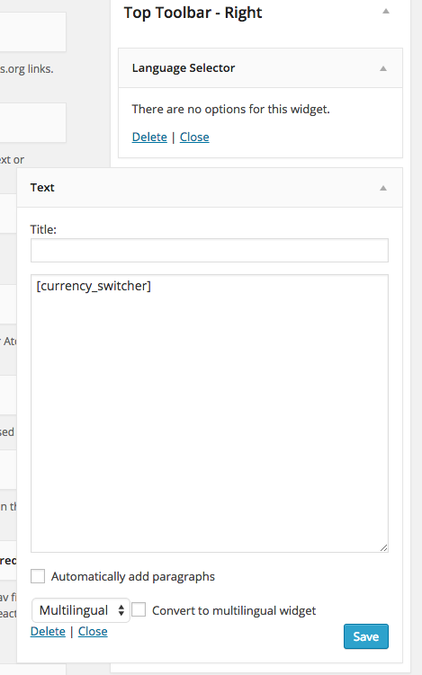

Suave
A classy WordPress and WooCommerce Theme
- created: 02/11/2015
- latest update: 02/11/2015
- by: CommerceGurus
- email: support@commercegurus.com
Thank you for purchasing our theme! If you have any questions that are beyond the scope of this help file and our video tutorials, please feel free to email us to support@commercegurus.com. Thanks so much!
Special Launch Promotion!
General Information
After you download the Suave Theme
Inside the zip file you download from themeforest you'll find a number of different directories, including:
- DemoData - this directory contains all the demo data you need to setup Suave to it's full potential.
- Documentation - the main theme documentation. If you're reading this, you've figured that directory out already :)
- Licensing - the main themeforest and theme licensing files.
- Themeinstall - This is where you'll find the main theme file itself - suave.zip which you'll be uploading into WordPress.
Getting started
We've spent a lot of time to keep things as simple as possible for you to get Suave up and running quickly. The easiest way to get started is to follow our Video Tutorials below.
How to update Suave
The best way to update Suave is to use the Envato Toolkit which will:
- Notify you when a theme update is available
- Offer you the option to backup your files in advance (strongly recommended!)
- Automatically update your version of Suave to the latest version.
- Backup the theme via ftp to your local machine
- Download the latest version of the theme
- Update the theme locally
- Replace your customizations in the latest version of the theme.
- Test, test, test!
- Delete your live theme.
- Upload your new copy.
- Test, test, test!
How to customize Suave
The best way to customize Suave (and thus avoid having to do manual updates!) is to use a child theme. Suave is fully compatible with WordPress child themes. For more on child themes, see http://codex.wordpress.org/Child_Themes).
How to contact support
To get the most out of Suave please take the time to go through the documentation in detail. We've covered off most of the things you'll need to know to get up and running and to enjoy Suave as we intended it. If you still can't find the answer to a question you have, we'd be more than happy to help you out. Just in get touch directly with our support team via email support@commercegurus.com and we'll be in touch within 24 hours with an initial response.
Video tutorials
Theme install and initial setup
The first video covers the initial theme install and setup process.
Prerequisites
This video assumes you have the following setup in advance:
- Your have your own hosting platform running up to date stable versions of Apache/nginx, PHP, MySQL.
- You have installed the latest version of self hosted WordPress.
- You have logged in to WordPress and are looking at the WordPress dashboard.
Assuming the above, the video below starts right at that point so grab a cup of coffee (or something stronger!) and sit back and watch the install process from start to finish. I recommend you watch it through at least once before then going into your own WordPress and watching the video again while pausing and following the steps taken in the video. It should only take you 10 - 15 minutes to complete the process if you do it this way :)
WooCommerce Setup
Once you're up and running with the main install, we have another video tutorial which walks you through some of the WooCommerce theme options provided by Suave.
Widget Setup
Next up it's a short video detailing how to setup widgets for Suave.
WPML, Multilingual, Multicurrency WooCommerce Tutorial
We're always creating lots of howtos on WooCommerce in general. We recently created a 6 part tutorial series on how to setup WooCommerce and WPML to be 100% multilingual and multicurrency. While this tutorial uses our Adrenalin theme the tutorial series can be used with any WooCommerce/WPML certified theme. Check out the 6 part WPML / WooCommerce setup tutorial.
Installation
Theme installation
If you can't view the videos or just prefer to install the theme from scratch manually this section will guide you through the process.
Installing WordPress
We'll make the assumption that you've got yourself hosting account capable of installing WordPress :) In order to install the current version of WordPress, please go to http://wordpress.org and download the current version. For information on how to install a WordPress Platform, please see the WordPress codex page.
Installing the theme
When you are ready to install a theme, you must first upload the theme to your WordPress directory. There are two ways you can install the theme: Using FTP: By using any FTP program of your choice you can upload the non-zipped folder to the /wp-content/themes/ folder on your server. Using WordPress: Navigate to Appearance > Themes > Install Themes. Go to upload and select the zipped theme folder (suave.zip) and hit install now and theme will be uploaded and installed. Once you have uploaded the theme, you need to activate it. To activate your new theme, go to Appearance > Themes and activate your chosen theme.
Installing the Required Plugins
Once you've activated Suave, you'll be prompted to install a set of plugins which are required to get the most out of Suave. The message will look like this:
Click the "Begin Installing plugins" option. You'll then see this screen.
For simplicity, tick the checkbox just under Bulk actions and from the Bulk options dropdown select "Install" and click "Apply". This will install all plugins that you'll need for the theme. Activate Plugins Once all plugins are installed you should return to the Required plugins screen and activate all plugins using the same bulk actions menu process. You'll know you've done everything correctly when you see this confirmation.
Installing WooCommerce
Once you've completed installing all plugins, click back into Plugins and you should see a little prompt from WooCommerce prompting you to install WooCommerce pages. You should NOT do this! We provide the WooCommerce pages during the demo content install process. If you do not wish to install the demo content you can of course process with this step. You're now ready to move on to setting up WooCommerce and the rest of the theme :)
WooCommerce Setup
Configure catalog thumbnail sizes
When Suave is installed on a fresh copy of WordPress and WooCommerce it will set product image thumbnail sizes to be optimized for the theme. To confirm these have been set correctly, go to WooCommerce->Settings->Products and scroll down to "Product Image Sizes". You should see the following.
{kind=link}
If you see different image dimensions you should change them to match the dimensions above. If you've already been using WooCommerce with another theme it's likely that the thumbnail dimensions were different to that recommended for Suave. As a result, we recommend you use the Regenerate thumbnails plugin to regenerate thumbnails to be optimized for Suave.
Regenerate Thumbnails Go to Tools->Regen. Thumbnails and click "Regenerate All Thumbnails". If you have a lot of thumbnails this may take a few minutes to complete. Source image sizes We recommend you source images are at least 500px * 650px to ensure they appear correctly in Suave.
Installing the demo data to match the themeforest demo site
If would like to pre-populate your website to look like the Suave Theme Demo site, the theme comes with a Demo Data Importer which works as follows:
- Go to Appearance ->Import Demo Data
- Click "Import Demo Data"
- We've created a stripped down xml file with placeholder images replacing the images you'll see on the demo site to ensure the import process is a quick as possible.
- The import may take 1-2 minutes to complete. If the import times out you may need to ask your hosting company to increase the timeout limit on your server.
You're now ready to proceed with configuring the rest of the theme. If you choose not to import the Demo Data you can proceed with adding content pages which we'll go through a little bit later in the docs. If you choose to start adding products and categories to WooCommerce manually, be sure to check out the following good guides by WooThemes:
{kind=link}
{kind=link}
{kind=link}
Setting up your homepage and blog
Homepage Setup If you've imported the demo xml, a series of homepages have already been created for you. To assign one to be your homepage:
- Go to Settings->Reading
- Select the Radio button "A static page" under "Front page displays"
- I personally recommend "Homepage - Default" if you've imported the demo xml. If not, go ahead and and assign your own preferred page to be your homepage.
- For the "Posts page", the blog page provided with the demo xml. Blog layout is controlled from the Theme Options -> Blog Settings section.
- Hit "Saves changes"
- Go to your website and you should now see your homepage
Things are starting to take shape! You'll notice that there's no slider appearing yet. Fear not, we'll get to that shortly! Before that we'll keep going and setup widgets for our site.
Setting up widgets
Suave has a number of different widget areas setup by default, including:
- Left Sidebar Menu - displays widgets on pages created with the Default page template
- Right Sidebar Menu - displays widgets on pages created with the Right Sidebar page template
- Sidebar - displays widgets on blog posts and pages
- Top toolbar - Left - displays widgets in the very top row of the header, above the logo on the left.
- Top toolbar - Right - displays widgets in the very top row of the header, to the right hand side.
- Mobile Search - this widget should be used to add a search widget to the top of smartphone devices.
- Header Search - this widget should be used to add a search widget to the right hand side of your header.
- Shop Sidebar - displays widgets on your shop pages when you have shop sidebar active
- Below main body - a full width widget area beneath your main body but before the footer.
- First Footer - displays widgets in the first of two footer rows. This widget area works best with a max. of 4 widgets added to it.
- Second Footer - displays widgets in the second of two footer rows. This widget area works best with a max. of 4 widgets added to it.
Creating your own widget areas
The theme installs the excellent WooSidebars which lets you create your own custom widget areas if you so wish. To do so:
- Go to Appearance->Widget Areas
- Click "Add new"
- Add a Name and Description
- You then need to decide how you would like the new widget area to work. You have a lot of flexibility as to how widget areas appear. I highly recommend checking out the WooSidebars docs http://docs.woothemes.com/document/woosidebars-2/ for full details.
Adding widgets to your Widget areas
You can setup your widgets according to your own preferences. For the demo site, we have setup the following widgets.
Right Sidebar
- Advanced Sidebar Menu - This is a clever little widget which will automatically display child pages on a parent page. I recommend the settings as displayed below.
- Search
Left Sidebar Exact same setup as Right Sidebar

Sidebar
Top Toolbar - Left
We use a simple text widget to create a top menu in the top toolbar left widget area.
Top Toolbar - Right
If you're using WPML, this is where we recommend you add your Language Selector and currency widget.

Shop sidebar
First Footer
Second Footer
Advanced widget settings on the Shop Sidebar
For some of the more sophisticated widgets illustrated above in the Shop Sidebar, here is a little bit more detail on how exactly these widgets are configured in Suave.
WooCommerce Product Categories
YITH WooCommerce Ajax Navigation - Filter by Size
YITH WooCommerce Ajax Navigation - Filter by Season
That should be everything you need to setup widgets!
Theme Options
Suave ships with a really comprehensive set of easy to use Theme Options.
To access the Theme Options, go to WordPress->Theme Options. Theme Options include:
- Global settings - set boxed/full width layout, responsive mode, body background colors and images.
- Colors - set the main colors used across your site. If you prefer you can select from a series of predefined color skins.
- Logos and icons - upload your logo and favicons. Your logo will automatically be downsampled for optimal display on retina devices. i.e. If you upload an 800*300px logo, it will be downsampled to 400px*150px on the website to ensure optimal display on retina devices.
- Header settings - fine grained control over the height of your header.
- Main menu settings - fine grained control over your main menu typography, color, sticky mode.
- Main menu images - this is where you'll upload any mega menu banner images.
- Footer settings - change footer text like Copyright information and whether to display Footer widget areas.
- Typography - complete control over all typography on your website. The font list automatically loads all Google fonts.
- Blog settings - control your blog layout.
- WooCommerce General Settings - lots of options to allow you to do things like enable catalog mode, hide prices, hide categories underneath product names and show/hide credit cards you accept in your footer.
- WooCommerce Product Details - fine grained control over the layout of your product details pages including the position of the Shop Sidebar, Size Guide image and title, Social sharing icons and Delivery and Returns data.
- WooCommerce Product Listings - fine grained control of your category/listing pages including sidebar position, Grid/List layout mode, number of products per row, number of products per page, and show/hide Shop announcements.
- Custom code - allows you to add custom css directly via Theme options.
- Import/Export - allows you to import and export your theme options. This is very useful when moving your site to another server or if you're setting up another site running Suave in the future.
When you first activate Suave, I suggest you review your Theme Options and then Save Changes at least once to ensure all options are set correctly for the first time.
How to setup sliders
Using Layer Slider
We're huge Layer Slider fans. We think it's the best WordPress slider plugin available. So we've also bundled that for you with the theme :) The quickest way to get up and running with Suave's Layer Slider slides is to import the Demo Data slides provided with the theme. To import the Demo Data slides complete the following steps:
- Go to LayerSlider WP -> All Slides
- Look for the "Import & Export Sliders" metabox.
- Click the "Choose file" option within the "Import Sliders" box.
- Browse to SUAVE_PACKAGE/DemoData/layerslider/
- Select and upload the zip file within this folder. Usually named something like LayerSlider_Export_2015-02-10_at_13.19.32.zip
- The import process should only take a minute or two.
Once complete you should have a number of sliders as follows.
Take not of the ID's assigned to the slides you just imported. To add one of these sliders to one of your content pages (e.g. a Homepage for example), open up your homepage and if you've already used one of the demo data homepages provided you should see something like this right at the top of the page.

You can edit which slider now appears on your homepage by clicking the edit icon in the Layer Slider Visual Composer box and then selecting which slider you wish to display.

Save your page. Setup Layer Slider fonts The final step with Layer Slider is to setup Layer Slider fonts. The demo slides use a number of great looking Google fonts. To configure these for Layer Slider:
- Go to Layer Slider-> All Sliders
- Look for the Load Google Fonts metabox. It should look like this.
In order to add these fonts, you should type the first few characters, then hit search which should return both fonts straight away. When you're finished click "Save changes". Your slides should now load correctly! In addition to this initial introduction to Layer Slider for Suave, we have also included very detailed documentation for Layer Slider itself in /SUAVE_PACKAGE/Documentation/layerslider
Managing content
Page Templates
Suave ships with a number of pre-defined Page templates which make managing content that little bit easier, including:
- Default template - this is the default WordPress page template. This page template includes a left sidebar which by default will display the contents of the "Sidebar" widget area.
- Full width page - no sidebars on this one - just your page content..
- Homepage - This is the same as the full width page but it doesn't show the page title as it's a homepage.
- Right sidebar - similar to the Default template but with the sidebar on the right hand side.
- Showcase:: 2 columns - A 2 column page template to display your Showcases/Portfolio items.
- Showcase:: 3 columns - A 3 column page template to display your Showcases/Portfolio items.
- Showcase:: 4 columns - A 4 column page template to display your Showcases/Portfolio items.
- Testimonials archive - An archive page template for testimonials
- WooCommerce page - this template should be assigned to your some of your WooCommerce pages like: Cart, Checkout and My Account.
Assigning a page template to a page
- Go to Pages->Add new
- In the right hand side you will see a "Page Attributes" area which has the "Template" dropdown.
- Select a template from the dropdown.
- Add your page content
- Click Update/Publish
Page Banners It's possible to add a nice banner image across the top of your page when creating a new page. This is done by adding a featured image for that page in WordPress. e.g.
Page Banner Image: Upload/select an image from your media library that's at least 1400px wide. (and ideally 1900px wide at least).
Show/Hide Page Title
You can also choose to show/hide your page title, it's color and a cool opacity setting for nice visual effects on the image itself e.g.
This is how this image is then presented:

Breadcrumbs
We've built in support for WordPress SEO Breadcrumbs. To activate, first you'll need to install WordPress SEO. Then go to WordPress -> SEO -> Internal Links and apply the following settings.
Examples of other page templates in action
- Full width page
- Left sidebar
- Right sidebar
- Blog with right thumbnail
- Blog with left thumbnail
- Homepage
- WooCommerce page
- Showcase 2 col
- Showcase 3 col
- Showcase 4 col
- Showcase details
- Single Blog post
- WooCommerce Category page
- WooCommerce Single Product page
Shortcodes and Visual Composer
In addition to the specific page templates listed above, you'll notice Suave ships with a lot of other types of pages with all sorts of goodies included in them. These don't use specific page template per se. They are brought to life through a combination of the wonderful Visual Composer plugin and a series of Shortcodes and custom post types we have made which are bundled in the CommerceGurus Toolkit plugin.
Using Visual Composer
Visual Composer is one of the best Page builder plugins available for WordPress. It allows you to quickly make complex page layouts with minimal technical skills. We've shipped lots of example pages in the demo data provided with the theme. In addition to the demo data, we've also provided a copy of the Visual Composer docs in the /SUAVE_PACKAGE/Documentation/visualcomposer folder. I would recommend spending some time to read these in detail to fully understand how to use Visual Composer.
CommerceGurus Shortcodes integrated into Visual Composer
We've deeply baked in some interfaces to our CommerceGurus Toolkit shortcodes right into the Visual Composer user interface. To access these shortcodes in Visual Composer: When you're creating a new page in WordPress click the "Backend Editor" button which will activate Visual Composer.
Go ahead and create a new row and then hit the large plus symbol (+) which will open the shortcode lightbox. You should see an option called "CommerceGurus Shortcodes".
Go ahead and click on CommerceGurus Shortcodes which will filter down the list of shortcodes we've integrated into Visual Composer. The best way to get to know what each of these do is through experimentation. Most of them are very simple. The most complex one which we use a lot in the demo data provided with the theme is the "CommerceGurus Content Strip" shortcode which is a very powerful and flexible shortcode. We think of content strips as sophisticated content banners which sit within visual composer columns and allow you to quickly create highly original elements on page layouts.
Content Strip Options
- Content Strip height - set the height of the strip.
- Link to wrap around content strip - If you want the entire strip to be clickable add a link to wrap around it.
- Content Area Width - set the width the content within the strip will take up. This should be set as a percentage.
- Bottom Margin - Add a bottom margin in px to the strip.
- Message box background color - The background color of the strip.
- Vertical Position - This is the vertical position of the content within the strip.
- Horizontal Position - This is the horizontal position of the content within the strip.
- Text alignment - Not to be confused with horizontal positioning, this is the alignment of the content independent of it's position.
- Text color - for now - just 2 simple options - Light/Dark.
- Text animation effect - choose from a series of predefined animation effects to apply to the content within the strip upon load.
- Text fade out on scroll - activating this will add a "Medium" style fade out upon scrolling down the page.
- Custom content css class - if you want to really target a specific strip with custom css you can add a custom class name here.
- Content - the actual content of the strip itself.
- Content strip background image - if you want to add an image to the strip you can select one here from the media library.
- Type of background - if you upload an image you should set the background type to Parallax image.
The demo data is particularly useful for providing lots of examples of how to use Visual Composer to create really beautiful content pages with Suave.
Custom Post Types and the CommerceGurus Toolkit plugin
During the theme install process one of the plugins you should have installed is the CommerceGurus Toolkit. CommerceGurus Toolkit is a dedicated plugin created specially for CommerceGurus themes which provides enhanced functionality for the theme including shortcodes and custom post types. In the past, these kind of things were integrated directly into the theme. It's now better to keep this kind of functionality in a plugin so if you switch to another theme in the future you won't lose your content.
CommerceGurus Shortcodes - we explored these briefly in the last section. Detailed examples of all shortcodes are provided with the Demo Data. In addition to CommerceGurus Shortcodes, the following custom post types are provided by the CommerceGurus Toolkit:
Showcases - These are sometimes called Portfolios in other themes. Showcases are essentially the same :) We've already covered Showcases in detail a little earlier under Page templates. Featured images for Showcases should be at least 1400px if possible. On a showcase details page you can choose to display a gallery of images or a Youtube/Vimeo video. The page will not display both. It will check and see if there is an Video ID present and if not it will attempt to load photos from the Showcase gallery. To add photos to the showcase gallery click the "Manage Gallery" button and then add and re-order gallery images as normal.
Announcements - Announcements is another simple custom post type that let's you create simple little broadcast announcement messages which then appear in your product category listing pages. Announcements auto cycle in a carousel and can be switched off from Theme Options as covered earlier.
How to translate
We recommend you use Poedit to translate the theme into your desired language. The theme has been fully tested with Poedit for translation capability and you will find a .pot file in /suave/languages/.
For frontend content translations, we recommend WPML. The theme has been fully tested with WPML.
More about Suave
Thanks again for purchasing Suave!. We're constantly expanding and refining our documentation so be sure to head over to http://commercegurus.com for lots more tips and tutorials on managing your Suave powered eCommerce website.
Please do not hesitate to contact our support team 24*7*365 on support@commercegurus.com
Thanks!